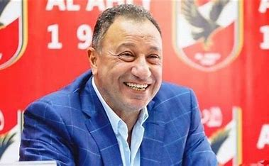
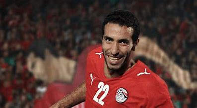
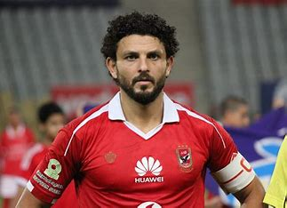
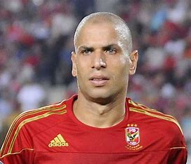
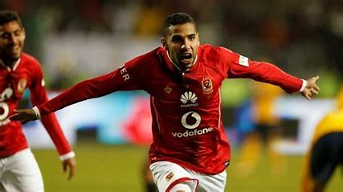
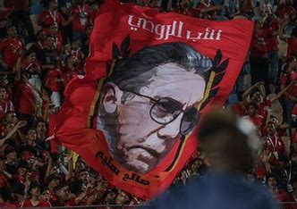

Al Ahly is one of the oldest and largest sports clubs in Egypt and Africa,
founded in 1907 in Cairo. Al Ahly is considered a symbol of Egyptian football,
and is characterized by its long history of achievements and championships.
These are the legends of the club
| 1-Mahmoud Al-Khatib (Bebo) : Al Ahly's iconic icon and top scorer, is considered one of the best strikers in the history of Egyptian football. Known for his skills and decisive goals, he left a big mark on the club's history. He led Al Ahly to win a large number of local and African championships, and remains beloved by fans until today. |  |
2-Mohamed Abou Treika (El Magico) :is an exceptional and creative playmaker, known for his decisive goals and creativity on the field. Al Ahly fans were mesmerized by his sportsmanship and skills, making him one of the most prominent players in the club's history. He won a large number of titles with Al Ahly and is considered an icon by fans of the red club. |  |
| 3-Hossam Ghaly (El Capitano) : is a seasoned leader with a high spirit and strength in defense, and has been a staple in Al Ahly's lineup for many years. He is a leader on and off the pitch, and has participated in many local and African championships, remaining a symbol of commitment and discipline for Al Ahly fans. |  |
4-Wael Gomaa (The Rock) : is one of the best defenders in the history of Al Ahly and the Egyptian national team, known for his defensive solidity and physical strength. He formed a defensive wall in front of opposing teams' attackers, making him an essential part of the team for years. He won many titles and is highly regarded by Al Ahly fans. |  |
| 5-Momin Zakaria : is a talented winger, characterized by his speed and dribbling skills. He has contributed greatly to the attack and has performed well during his time with the team, making him a favorite among Al Ahly fans. He is known for his beautiful goals and creating chances. |  |
6-Saleh Selim (The Maestro) : was an exceptional player and leader, who was part of Al Ahly's history as a player and administrator. He led the club to achieve great sporting achievements and contributed to the consolidation of its values. He had a charismatic personality and a distinctive style of play, and left an immortal legacy that still influences the culture of the club. |  |